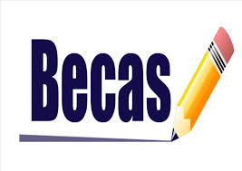

* Registro de aspirantes a partir del 10 de febrero al 25 de junio
*Constancia de 3er. Año de secundaria
*Acta de nacimiento (copia en reduccion tamano carta)
*2 fotofrafias tamaño infantil blanco y negro(fondo gris claro)
*CURP(copia en ampliacion tamano carta
*Curso de nivelacion durante 7 sabados a partir del 3 de mayo, en el area de matematicas y lectura
*presentat examen de admision(27 de junio)
Podra seguir estudiando con la ayuda economica de una beca
Le ofrece las competencias profecionales que le permiten al estudiante
Dar mantenimiento alos sistemas mecanicos
Manejo de herramientas convencionales
Manejo de maquinas de control numerico
Soldar piezas mecanicas con arco electrico y oxigas
Proceso de ajustes de piezas mecanicas
Competencias profecionales que le permitiran:
Elaborar instalaciones electricas residenciales y comerciales.
Reparar y dar mantenimiento a motores y generadores de corriente alterna y continua.
Mantener los sistemas de iluminacion y energia renovable.
Mantener instalaciones de baja y media tencion.
Le competencias profecionales que le permitiran al estudiante:
Editar softwere integrado para la creacion de programas de aplicacion y diseño de base de datos.
Diseñar sistemas de computo y servicios relacionados(Desarrollo de programas al manejo de base de datos y.net.)
Editar y difundir contenido exclusivamente a travez de internet.
Realizar servicios de busqueda en la red y comercio electronico.
Desarrollar aplicaciones para telefonos celulares.
Ofrece las competencias profecionales que le permitiran al estudiante realizar actividades dirigidas ala administracion de bienes, planificando los suministros destinados al almacenamiento de manera manual y electronica, la organizacion de los nodos logisticos para el transporte de mercancias asi como prover los servicios y atenciones al cliente sobre los movimientos y los costos de la cadena logistica.
Alumnos con promedio de 9.4 o superior que ingresen o en el transcurso de la carrera.
Aquellos jovenes que tengan mayor a 7 y que no tengan reprobada ninguna materia.
continuidad de la beca que traen de la secundaria.